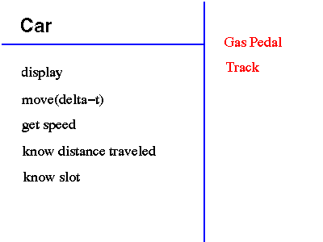

Why did I write something as silly as a slot car simulation? Well, as part of an internal training class I taught at a previous company, I needed a simple application that had enough structure to motivate OO design discussions, and that was fun and intuitive. I decided to have the class design a simple application that animates a simulation of a slot car race. After the design, I asked the students to implement part of it, starting with the Car class. Of course, to do this, I had to write the program myself, and then provide everything but the Car class itself. Anyway, here is the resulting Slot Car applet, in all its glory:
I was teaching an introduction to OO class, internally called "OO101." In it, I presented some design ideas, concentrating on RDD and OMT. As a text, I used Timothy Budd's "An Introduction to Object-Oriented Programming" -- it's perhaps a bit dated, but I like the fact that it concentrates on the fundamentals of OO, rather than the details of one particular language. My audience was most interested in C++ and Java, so I supplemented the book with some material I wrote on Java.
In class, I used giant CRC cards, and we came up with a CRC card design for a slot car race, with cards that looked something like this:

We developed these CRC cards by animating scenarios in the class, with a student holding the card for each class. In the class notes, I eventually translated the CRC designs into OMT-esque Object Interaction Diagrams, and class diagrams. Students then implemented part of this design to make a working program, and then discussed the design for an extension. This "lab" activity was interspersed with lectures on the fundamentals of OO (polymorphics, encapsulation, inheritance, etc.).
If you'd like to read some more about the slot car design and the program, I invite you to:
Enjoy!